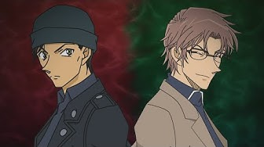

- 柯南登場角色大全 -
柯南系列背景資訊
《名偵探柯南》（日語：名探偵コナン），是日本漫畫家青山剛昌筆下的推理漫畫作品。
描述高中生偵探工藤新一被黑暗組織灌下藥物導致身體縮小後，試圖調查該組織以及破獲其他各種案件的故事。
原作漫畫從1994年6月開始在《週刊少年Sunday》連載，之後被改編為各種系列的衍生作品，主要包括
TMS娛樂製作的電視動畫、劇場版、OVA、漫畫特別篇，和真人電視劇。改編動畫於1996年播出即大獲好評，
無論是情節還是案件，都得到評論家們的一致讚譽。至今已成為日本國民級長壽動漫。
- 名偵探柯南主要陣營 -
1. 紅方：正義陣營
對抗黑衣組織的正義聯盟，負責解決米花町（虛構地方）裡發生的不同案件，案件性質多為命案。
紅方陣營的代表人物分別有日本公安、日本偵探、各國情報人員以及科學家。
-
2. 黑方：邪惡陣營
- 黑衣組織：酒廠 -
神秘的犯罪恐怖組織，組織的真實名稱尚未在漫畫中被正式說明，惟透過對話中暗示為『烏丸集團』與其組織有極強的關係。
目的與構成也不明，目前僅知道組織的內部有非常嚴格的紀律，凡是任務失誤或試圖脫離組織者都會被處決。
-
紅方主要角色
- 毛利偵探事務所 -
| 角色 |
介紹 |
人物照片 |
| 江戶川柯南 |
本名工藤新一，17歲（外表為7歲）原是關東地區的知名高中生偵探，因為推理能力一流而被稱為「日本警察的救世主」
和「平成的夏洛克·福爾摩斯」。帝丹高中2年B班學生，著名推理小說作家工藤優作和著名女演員工藤有希子的獨生子。
和毛利蘭是青梅竹馬且互相暗戀，後來正式成為情侶。 |
 |
| 毛利蘭 |
17歲的女高中生，就讀帝丹高中2年B班，擅長空手道，為帝丹高中空手道社的主將，亦是關東地區空手道大賽冠軍。
毛利小五郎和妃英理的獨生女，工藤新一的青梅竹馬，喜歡新一，後來在英國倫敦被新一告白，於京都修學旅行期間
正式回覆新一的告白，兩人因而正式成為情侶。 |
 |
| 毛利小五郎 |
38歲的私家偵探，開設「毛利偵探事務所」，因柯南使用變聲蝴蝶結和麻醉槍協助解決案件後聲名大噪變成知名的名偵探，
被稱為「沉睡的小五郎」。毛利蘭的父親，與妃英理是青梅竹馬的夫妻，但兩人目前因分居中。大多數時候頭腦迷糊且好色
，非常喜歡喝酒。在成為私家偵探前曾是一名刑警，所以也有一定程度的推理實力，擅長柔道，槍法極準。 |
|
- 少年偵探團 -
| 角色 |
介紹 |
人物照片 |
| 灰原哀 |
本名宮野志保，18歲（外表7歲），前黑暗組織成員，組織代號為「雪莉」，後來姐姐宮野明美被組織給殺害而脫離組織，後被
阿笠博士收留，以灰原哀為名。就讀東京都米花市帝丹小學1年B班。喜歡柯南但表現不明顯。 |
 |
| 阿笠博士 |
自稱“天才發明家”，熱衷於科學實驗。與工藤新一一家是鄰居。在新一被變小後，發明了許多設備幫助新一破案，是新一最信任的
理解者、協助者。在新一追查黑衣組織的過程中，阿笠博士一直是新一追查組織的得力助手和堅強後盾 |
|
- 執法人員 -
| 角色 |
介紹 |
人物照片 |
| 目暮警官 |
本名目暮十三，經常在兇案現場要求部下調查相關證據；在處理綁架案時則擔任指揮的工作。由於工藤新一曾
幫助他偵破不少案件，所以對他有很高的評價。柯南也常以小五郎的名義通知他前來聽「自己的」推理。 |
 |
| 佐藤美和子 |
警視廳刑事部搜查一課強行犯搜查三系刑事。擁有極多追求者，有「警視廳之花」之稱。身手不凡且智勇兼備，
但是個愛情白癡。目暮十三的下屬，曾喜歡松田陣平，現與高木涉是戀人關係。行事果敢堅決、細心敏銳、
精練能幹、執著冷靜、堅強勇敢；嫉惡如仇，擁有強烈的正義感和犧牲精神。同時也很重感情，天真燦爛，平易近人，不失孩子氣。 |
.jpeg) |
| 高木涉 |
警視廳刑事部搜查一課強行犯搜查三系刑警。目暮十三的下屬，與同事佐藤美和子是戀人關係。性格相對溫順忠厚，
是與少年偵探團感情最好的警察。 |
|
| 赤井秀一 |
美國FBI頂尖搜查官，左撇子，相當優秀的FBI探員，擅長截拳道，狙擊能力更是一流（曾經用狙擊槍從1300碼外射中
琴酒手上的手榴彈，射程遠超過組織的香緹及科倫），被蒂莫西·韓特稱作是「最強狙擊手」，
和柯南同時被苦艾酒稱作是能擊穿黑暗組織心臟的「銀色子彈」。 |
 |
| 降谷零 |
化名安室透，警察廳警備局警備企畫課的公安警察，高級國家公務員。被派入黑暗組織內的間諜，組織代號為波本，
公開身份為一名私家偵探，後來在「白羅咖啡廳」擔任服務生。有着一流的情報收集能力、
觀察力以及洞察力。擁有高超的開車技術，擅長:
|
|
黑方主要角色
- 酒廠 -
| 角色 |
介紹 |
人物照片 |
| 琴酒 |
黑衣組織主要成員。身穿黑色風衣，留着銀色長髮，臉總被帽子和劉海半遮掩着，性格冷酷殘忍，頭腦冷靜
，可以毫不猶豫地殺死任何人。經常為黑衣組織執行各種暗殺和清除叛徒的任務，是給工藤新一灌下
APTX4869導致其身體變小的罪魁禍首，亦是江户川柯南所面對的主要敵人之一。 |
|
| 伏特加 |
黑衣組織的幹部，在組織中負責協助重要的交易等活動，是琴酒的搭檔，完全服從琴酒且一起行動，總是稱呼他“大哥”。
身材魁梧 經常佩戴墨鏡，極其兇惡但頭腦有些遲鈍，但擅長使用多種武器，有時也會代替琴酒駕車。
雖大部分能力都不及琴酒，但擅長使用手槍、IT、駕駛交通工具，作案手段極端殘忍 |
.jpeg) |
| 朗姆 |
朗姆是黑衣組織的二把手。赤井秀一還在組織的時候曾經聽過這個代號，是比琴酒還要重要的大人物。
組織內對朗姆的外貌的描述傳聞多種多樣，有人説是“身強力壯的男人”，有人説是“像女人一樣的男人”，
也有人説他“是個老人”，甚至有人説那些全部是他的替身。但有一個特徵的描述是明確的——他的某個眼球是假的。 |
|
- 其他資訊 -
按此了解柯南時間線
柯南角色關係解說